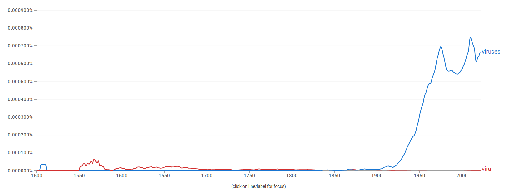
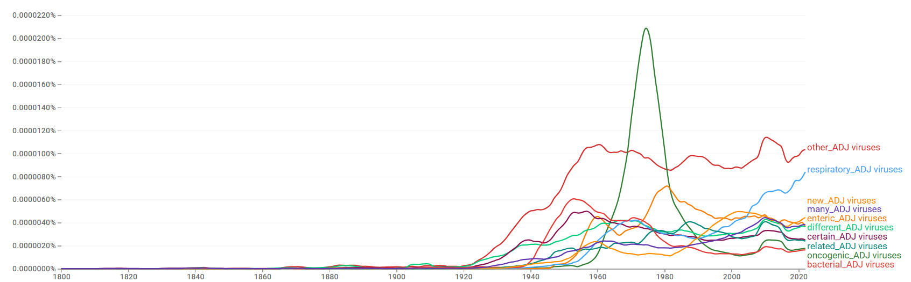
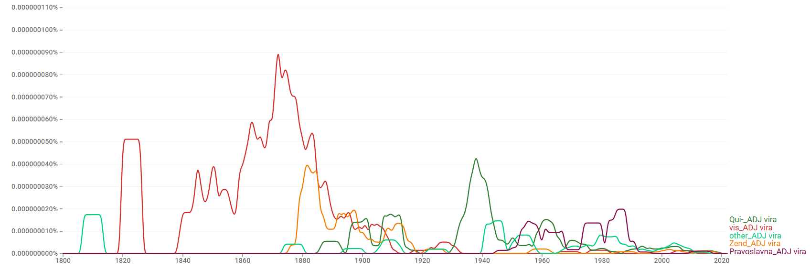
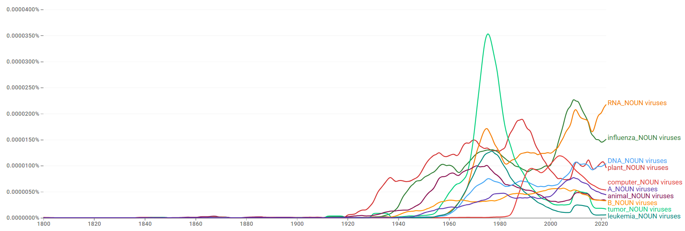
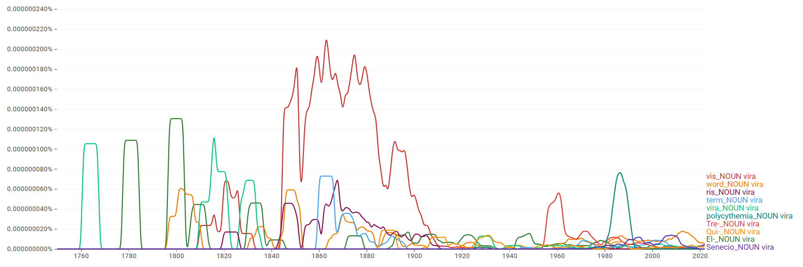
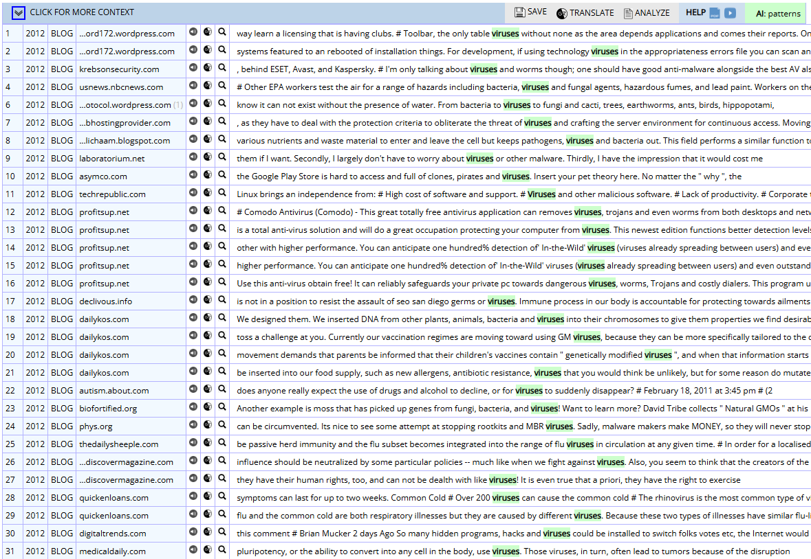
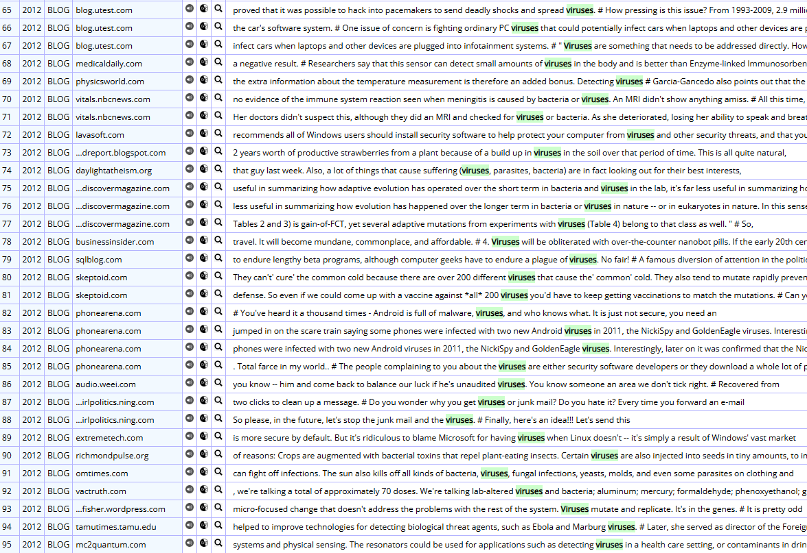

viruses/vira

결론
viruses와 vira는 동일 의미 영역에서 기능적으로 분화된 복수형이라기보다, 현대 영어에서 서로 다른 지위를 갖는 형태다. viruses는 바이러스학·공중보건·의학·생물학, 나아가 컴퓨터 보안 담화까지 폭넓게 쓰이며 생산적 표준 복수형으로 확고히 자리 잡았다. 반면 vira는 고유명사·문화 명칭·제한적 학술 명명의 일부로만 나타날 뿐 virus의 실질적 고전 복수형으로 거의 기능하지 않는다. 따라서 의미·register 분화가 아니라, 규칙형이 빠르게 고착되고 고전형이 주변적으로만 잔존한 규칙형 우세 → 빠른 수렴 → 경쟁 후 소멸로 이해된다.
연구 결과
과정 및 결론 도달 과정 · 사용 도구
1차 Ngram 사용량 그래프로 규칙형의 압도적 우위와 고전형의 비가시성을 확인하고, 2차 같은 그래프로 20세기 중반 이후의 빠른 수렴 경로를 읽었다. 3차는 Ngram 연어(생물학적 결합 vs 비현대적·고유명사적 결합)와 COCA 맥락 분석(보안·의학·생태 vs 인명·문화명)으로 두 형태의 지위 차이를 해석했다.
세부 정보 · 구간 별 분절
초기에는 두 형태 모두 매우 낮지만, 규칙형 viruses는 20세기 중반(특히 1940년대 후반~1970년대)에 가파르게 상승해 이후에도 높은 수준을 유지한다. 고전형 vira는 일부 초기 구간 외에는 거의 가시적 사용량이 없으며 현대 영어에서 생산적 형태로 기능하지 않는다. 현재 viruses가 사실상 압도적 우위를 점한다.
고전형 vira가 일찍 주변화된 뒤 20세기 중반 이후 viruses가 급격히 중심을 확립한 빠른 수렴의 경로다.
viruses는 respiratory/enteric/oncogenic/bacterial viruses, RNA/DNA/influenza viruses 등과 결합하며 질병 분류·감염 경로·생물학적 특성의 핵심 용어로 기능한다. COCA에서는 컴퓨터·모바일 보안(가장 높은 비중), 의학·생물학, 생태·환경, 비유적 확산까지 폭넓게 쓰인다. 반면 vira는 Qui-, vis, Zend 등 비현대적 결합을 보이며, COCA에서는 인명(Vira Whitehouse), 문화 명칭(포르투갈 민속 vira), Polycythemia vira 같은 학술 명명의 일부로만 나타난다. 따라서 두 형태는 대등한 경쟁형이 아니라 경쟁 후 소멸에 가깝다.
규칙형 viruses는 이 단어가 현대 영어에서 가산명사로 정착하는 과정에서 처음부터 영어식 복수형을 취해 표준으로 자리 잡았으며, 고전형 vira는 생산적인 복수형으로 기능한 적이 거의 없다.
참조 이미지
연어 그래프 · COCA 맥락 캡처 펼치기





